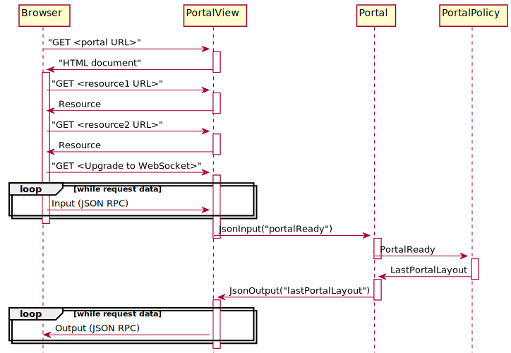
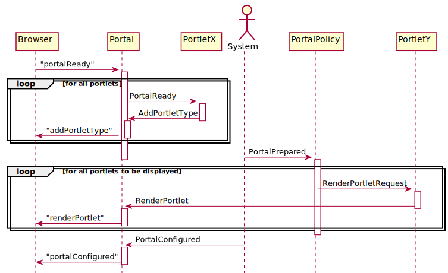

@Version(value="${api_version}")
See: Description
| Interface | Description |
|---|---|
| Portal.ManagedPortalMXBean |
An MBean interface for the portal component.
|
| Portlet | |
| RenderSupport |
| Class | Description |
|---|---|
| AbstractPortlet |
Provides a base class for implementing portlet components that
maintain the portlet’s state in the browser session.
|
| AbstractPortlet.PortletBaseModel |
Defines the portlet model following the JavaBean conventions.
|
| KVStoreBasedPortalPolicy |
A component that restores the portal layout,
using key/value events for persisting the data between sessions.
|
| Portal | |
| PortalLocalBackedKVStore | |
| PortalSession |
The server side representation of a window in the browser
that displays a portal view (a portal session).
|
| PortalView | |
| PortalView.LanguageInfo | |
| PortalView.ThemeInfo | |
| ThemeProvider | |
| Utils |
| Enum | Description |
|---|---|
| Portlet.RenderMode |
| Exception | Description |
|---|---|
| ResourceNotFoundException |
Thrown if a resource cannot be found.
|
The portal package provides a portal implementation based on the core, io and http packages of the JGrapes framework.
The Portal component
is conceptually the main component of the portal. It exchanges events
with the portlets, usually using a channel that is independent
of the channel used for HTTP Input/Output.
When created, a Portal component automatically
instantiates a child component of type PortalView
which handles the HTTP side of the portal. You can think of the
PortalView/Portal
pair as a gateway that translates the Input/Output related events on the
HTTP side to portal/portlet related events on the portlet side and
vice versa.
The portal is implemented as a single page application. There is only one initial HTML document that provides the basic structure of the portal. Aside from requests for static resources like JavaScript libraries, CSS, images etc. all information is then exchanged using a web socket connection that is established immediately after the initial HTML has been loaded.
The following diagram shows the start of the portal bootstrap to the first JSON messages.

After the portal page has loaded and the web socket connection has been
established, all information is exchanged using
JSON RPC notifications.
The PortalView processes
Input events with serialized JSON RPC data
from the web socket until the complete JSON RPC notification has been
received. The notification (a JsonInput
from the servers point of view) is then fired on the
PortalSession channel, which allows it to
be intercepted by additional components. Usually, however, it is
handled by the Portal that converts it
to a higher level event that is again fired on the
PortalSession channel.
Components respond by sending higher level events on the
PortalSession channel.
The events are handled by the portal which converts them to
JsonOutput events. These are
processed by the PortalView which
serializes the data and sends it to the websocket using
Output events.
The following diagram shows the complete mandatory sequence of events
following the portal ready message. Note that the documentation of
the events uses a slightly simplified version of the sequence
diagram that combines the PortalView and the
Portal into a single object and leaves out the
details about the JSON serialization/deserialization.

Portlets trigger actions on the browser by firing events on the portal
channel. The events are forward to the PortalView
that converts them to JSON RPCs that are serialized and sent on the web
socket (as Output events).
Details about the handling of the different events can be found in their
respective JavaDoc or in the documentation of the components that handle
them. The diagrams used there combine the
PortalView and the
Portal into a single object just as this one.
The diagram leaves out some optional message exchanges
that may occur in response to a
AddPortletType event.
The complete sequence of events is documented at the event’s
class description.
Portal policy components are responsible for establishing the initial
set of portlets shown after the portal page has loaded. Usually,
there will be a portal policy component that restores the layout from the
previous session. KVStoreBasedPortalPolicy
is an example of such a component.
There can be more than one portal policy component. A common use case is to have one policy component that maintains the portal layout and another component that ensures that the portal is not empty when a new session is initially created. The Demo includes such a component.